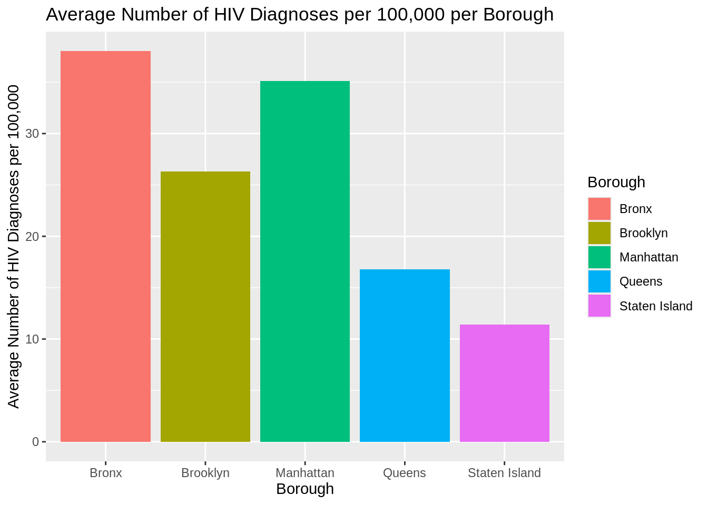
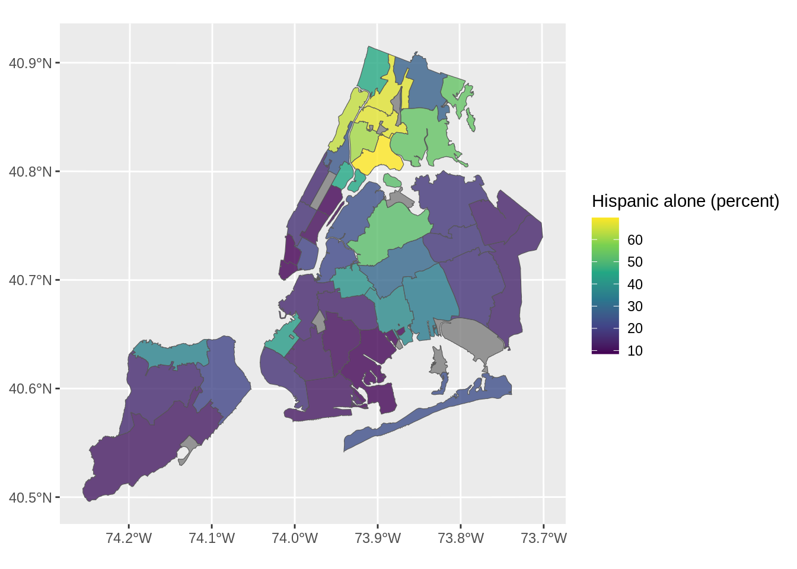
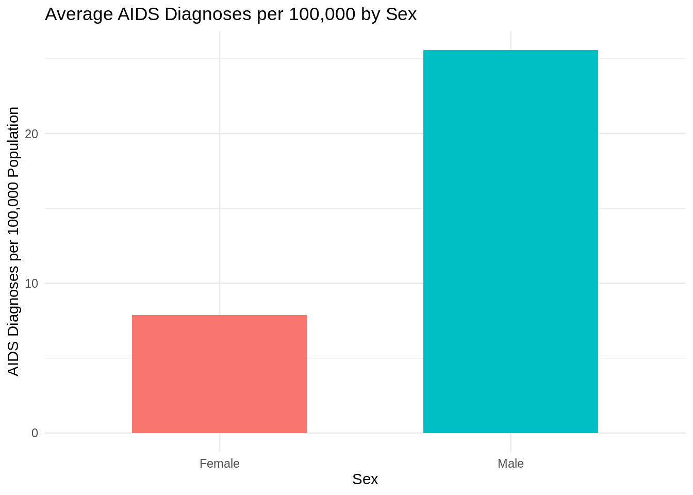

An Unequal Epidemic: How HIV Hits NYC Communities Differently
Exploring the Racial, Gender, and Geographic Disparities in HIV/AIDS Diagnoses Across New York City

Overview
In New York City, HIV and AIDS have been public health concerns for decades. But not all New Yorkers face the same level of risk. Our analysis reveals a troubling reality: your race, gender, and where you live can dramatically affect your likelihood of being diagnosed with HIV or AIDS. Specifically, Black residents experience a disproportionately high burden of HIV and AIDS, compared to their counterparts. Through accessible visuals and an interactive map, we show how these disparities play out across the five boroughs — and why it matters.
Visualizing Disparities
Disparity by Race and Sex
The first thing someone might expect to read about when analyzing HIV and AIDS cases is how many cases there are. To start, we plotted the total number of HIV and AIDS cases per borough.
We also plotted these totals for each race.
In these plots, two aspects stand out. In both total HIV and AIDS cases, the Bronx and Brooklyn are at the top for boroughs and Black and Hispanic are at the top for races. But since these are total counts, they don’t factor in population differences. It’s possible these boroughs and races are only at the top because they have the largest populations. In order to account for this, we plotted the average number of HIV cases per 100,000 people per borough and race. Plotting by per 100,000 people rates normalizes the population to be 100,000 people for each area, so areas with higher populations aren’t punished.

As seen above, population did factor into the higher totals for the boroughs. Brooklyn had the most total HIV diagnoses and the second most total AIDS cases, but is third in both categories when normalizing for population, suggesting Brooklyn’s larger population contributed to its higher rankings. Manhattan went from third in total HIV and AIDS cases to second in terms of rates per 100,000, suggesting its lower total is due to it having a smaller population, which potentially masked socioeconomic inequities causing its increased contraction rates.
Population didn’t have a significant impact on the races, however. Black people had the most total cases for both HIV and AIDS, and had the largest rate of cases per 100,000 too, suggesting their higher rates aren’t just due to population, but other factors. Hispanic people were also second in totals for both and remained second in per 100,000 rates, suggesting their placement wasn’t solely due to population either.
Each borough in New York City is split into several different neighborhoods by New York City’s DOHMH, totaling to 42 different neighborhoods, called the UHF42 neighborhoods. Below we plotted the HIV and AIDS totals for each neighborhood, to see which neighborhoods were contributing the most cases to their respective borough’s total.
As expected, the neighborhoods at the top are mostly in Brooklyn, the Bronx, and Manhattan, although West Queens is an outlier. As already discovered, Black and Hispanic people had the highest totals and rates of HIV. Now that we see which neighborhoods have the most cases, does it hold that those neighborhoods generally have the highest proportions of Black and Hispanic residents? Below are two maps of New York City, broken up into its UHF42 neighborhoods. The first plot colors each neighborhood by its Black proportion and the second colors each by its Hispanic proportion.
Linking to GEOS 3.11.1, GDAL 3.6.2, PROJ 9.1.1; sf_use_s2() is TRUE
As seen in the above plots, the assumption that the neighborhoods with the highest totals and rates of HIV and AIDS also have the highest proportion of Black and Hispanic residents checks out. Manhattan (the most northwestern area), the Bronx (the most northeastern area), and Brooklyn (the most southeastern area of the mainland) have the most Black and Hispanic residents. Queens and Staten Island have the least Black and Hispanic residents, matching their lower totals and rates. Although, the West Queens outlier from before does have a relatively high proportion of Hispanic people, which could explain why they had so many cases.
Gender-Based Disparities
Across all racial groups, males consistently showed higher diagnosis rates than females—especially pronounced among Asian/Pacific Islanders.This chart highlights a striking gender disparity in the average rate of AIDS diagnoses per 100,000 people in New York City. The data shows that males are diagnosed with AIDS at more than double the rate of females, with an average of about 25 per 100,000 compared to less than 10 for females. This pattern holds across multiple racial and geographic groups and has persisted over time. The reasons behind this disparity are complex and may include differences in risk behaviors, testing frequency, social stigma, or access to early HIV treatment, which can prevent the progression to AIDS. This gap underscores the need for gender-specific public health interventions, especially outreach, education, and prevention programs targeted at high-risk male populations.

Interactive
To make the patterns in our data more accessible and meaningful, we created an interactive map of New York City that allows users to explore HIV and AIDS diagnosis rates by neighborhood. This tool provides a dynamic way to visualize disparities by year, sex, race/ethnicity, and type of diagnosis (HIV vs. AIDS). With just a few clicks, you can see how certain neighborhoods — particularly in the Bronx, Brooklyn, and parts of Manhattan — consistently report higher diagnosis rates. You can also observe how specific demographic groups are impacted differently depending on location. For instance, selecting “Asian/Pacific Islander” and “Male” reveals neighborhoods where HIV rates are unexpectedly high for that group, reinforcing one of our key findings. This map empowers users to interact with the data in real time, uncovering patterns that might be missed in static charts. Ultimately, it reinforces our central message: the HIV/AIDS epidemic in NYC is deeply shaped by geography, race, and gender — and our response must be just as specific and targeted.
You can explore the interactive map at the link below: Click here to open the Interactive Map Explorer
Conclusion
Our analysis makes one thing clear: HIV and AIDS do not affect all New Yorkers equally. The burden of this epidemic falls disproportionately on Black and Hispanic communities, men, and residents of underserved boroughs like Brooklyn and the Bronx. While overall diagnosis rates have declined in recent years, the story is far from one of universal progress. Rising rates among Asian/Pacific Islander males and persistent disparities across neighborhoods show that public health improvements have not been evenly distributed. This isn’t just a health issue — it’s a reflection of deeper structural inequalities in healthcare access, education, income, and stigma. The HIV/AIDS epidemic in NYC is a mirror of the city’s broader social landscape, revealing who is most likely to be overlooked or left behind. Looking ahead, such data should not merely serve as a record, but rather as a call to action. Public health strategies must be precise, inclusive, and equity-oriented to ensure that prevention, testing, and care services truly benefit the people and regions that need them most.